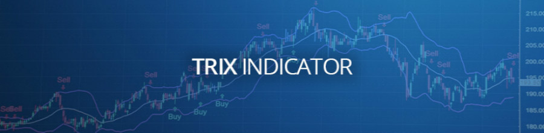

三重指数移动平均线（TRIX）是功能强大的
技术分析工具，旨在帮助交易者确定价格动能以及识别基础金融资产的超买和超卖状况。TRIX由杰克·赫特森（Jack Hutson）在1980年代初期开发，顾名思义，它用于显示三重指数平滑移动平均线的变化率。
从功能上讲，TRIX可用作振荡器和动量指示器。当用作振荡器时，它显示了潜在的高峰和谷底价格区；当用作动量（或趋势跟随）指标时，它可以过滤掉与总体主导趋势无关的价格峰值。
TRIX也被描述为“冲动指标”，它能够指出市场上冲动的增长或下降趋势。大致来说，TRIX属于指标的“震荡指标”组。与TRIX相似的其他指标包括
MACD（移动平均收敛散度）和RVI（相对活力指数）。
想使用这个技术工具吗？选择监管严格的AvaTrade爱华平台是你不错的选择。
TRIX计算
TRIX是三倍平滑均线，本质上是均线，均线，均线，因此是“三倍”。指数移动平均线通常更重视当前价格数据，而不是简单的移动平均线这只是计算价格的平均值，所有价格数据的权重相等。
大多数平台在计算TRIX时使用默认的14周期，但是参数可以根据交易者的需要进行调整。
以下是计算14周期TRIX时遵循的步骤:
单平滑均线= 14期均线，基于收盘价计算
双平滑均线=单平滑均线的14周期均线
三平滑均线=双平滑均线的14周期均线
TRIX =三倍平滑均线的1%周期变化
上面的计算将计算一个TRIX指标，该指标上下摆动0，产生正值和负值。
解读TRIX指标
如上所述，TRIX既可以作为趋势跟踪指标，也可以作为振荡器。作为趋势跟踪指标，正的TRIX值意味着上升趋势已经存在，而负的TRIX值表明市场已经存在下降趋势。当TRIX值沿着0值(中线)运行时，这意味着市场立场是中性的。
作为一个振荡器，TRIX被用来观察市场中的超买和超卖情况。极端正值表示超买情况，而极端负值表示市场超卖情况。
交易TRIX信号
以下是如何交易不同类型的TRIX信号:
零线交叉
如上所述，TRIX可以帮助确定市场的“冲动”。以0值为中心线，如果它从下方穿过，这将表明市场中的冲动正在增长，交易员可以寻找机会在市场中下单买入。同样，从上方越过中线将预示着市场的萎缩，交易者可以寻找机会下销售订单在市场上。
信号线交叉
为了选出最佳切入点，交易者在TRIX指标上增加了一条信号线。信号线基本上是TRIX指标的移动平均线，因此，它将总是落后于TRIX。当TRIX从下方穿过信号线时，将会出现下单的信号。同样，当TRIX从上方穿过信号线时，发出卖出指令的信号也会出现。这适用于趋势和范围市场。在趋势市场中，信号线交叉将表明价格回撤结束，主要趋势将恢复。在区间市场中，一条信号线将确认市场中的阻力位和支撑位已经得到维持。
分歧
TRIX还可以用来确定市场何时会出现重大转折点。这是通过观察差异来实现的。当价格与TRIX指标的方向相反时，就会出现背离。当价格创出更高的高点，但TRIX创出更低的高点时，这表明上涨趋势正在减弱，一个熊市逆转即将发生。同样，当价格处于较低水平，但TRIX处于较高水平时，这是一个信号，表明牛市反转即将发生。
结合TRIX和其他指标
作为基于均线的指标，TRIX通常会产生领先信号。因此，在跟踪价格时，将它与其他指标结合起来以挑选出高概率的机会是很重要的。
以下是最佳TRIX组合:
TRIX和RSI
这相对强度指数衡量趋势的力量和势头。当与TRIX相结合时，当基础资产的价格受到区间限制时，RSI可以帮助提供明确的买入和卖出信号。当RSI和TRIX都处于超卖区域，并发出潜在反转信号时，将出现强劲的买入提示。类似地，当RSI和TRIX都处于超买区间时，将会出现强烈的卖出提示，预示着一个潜在的反转。
TRIX和MACD
移动平均收敛散度(MACD)是一个趋势跟踪和动量指标。MACD和TRIX的结合可以为进入新趋势和在反转即将发生时退出提供很好的信号。当TRIX越过零线和MACD交叉时，将出现进入信号。例如，当TRIX从下方越过零线，并且在MACD超卖区域出现交叉时，就会发出买入指令。当MACD在超买区域交叉时，将提供一个早期的退出信号，但是耐心的交易者也可以等待TRIX从相反的方向越过零线。
在AvaTrade爱华交易TRIX
TRIX是AvaTrade的一个内置的可定制指标。以下是在这个受监管且屡获殊荣的经纪公司使用该指标的好处:
众多指标-在AvaTrade，您可以将TRIX与150多种技术和基础分析工具和指标中的任何其他工具相结合来生成高概率交易信号。
综合教育资源-AvaTrade提供对有效交易资源的直接访问，包括Sharp Trader和双重编码，自动化
外汇交易平台。
演示帐户-使用虚拟基金在真实市场中测试您的所有TRIX策略AvaTrade演示账户。
**免责声明-虽然已经进行了适当的研究来汇编上述内容，但它仍然只是一篇信息和教育文章。所提供的内容不构成任何形式的投资建议。
在AvaTrade开立您的交易账户，或尝试我们的无风险演示账户！